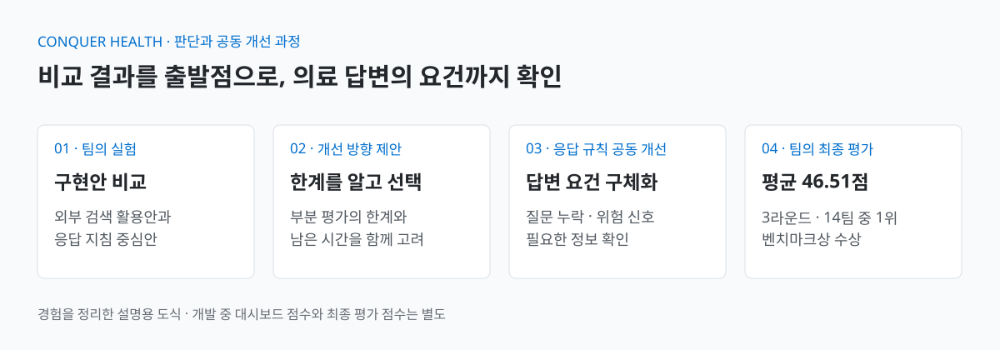

의료 상담 응답 품질 개선 과제
과제
- 루닛 의료 특화 파운데이션 모델 해커톤 · L2-preview 활용 의료 질의응답/건강관리 과제
- 공통 질문에 대한 팀별 답변 품질 벤치마크 비교
제약과 팀 합의
- 모델 재학습 없이 외부 도구·응답 지침으로 답변 개선 · 제한 시간 약 20시간
- 5인 팀 합의: 개별 구현 실험 후 정해진 시점부터 최고 대시보드 점수안 공동 보완
AI 응용
평가 근거로 의료 AI 응답 규칙 개선
수상의료 특화 파운데이션 모델 해커톤 벤치마크상

해커톤의 구현안 비교, 개선 방향 제안과 팀 공동 작업을 정리한 설명용 도식입니다.
흐름 한눈에 보기 · 팀 공동 산출물
HealthBench 기준을 참고해 응답 규칙을 공동 보완하고, 제출 시스템은 대회 최종 벤치마크에서 평가받았습니다.
의료·건강 질문과 공동 보완한 응답 규칙을 생성 요청에 반영
추가 모델 호출 없이 기존 생성 요청으로 답변 생성
질문의 요구·위험 신호·추가 정보 확인을 고려하도록 응답 지침 보완
대회 최종 3라운드 평균 46.51점 · 평가 참여 14팀 중 1위
개인 참여: 비교 결과 검토, 개선 방향 제안, HealthBench 기준 분석과 응답 규칙 공동 개선. 응답 규칙과 제출 구현은 팀 공동 산출물이며, 규칙 보완으로 별도 모델 호출을 추가하지 않았습니다.
외부 검색 활용안 / 응답 지침 중심안
남은 시간 · 부분 평가 편중 우려
현재 최고 점수안을 기준으로 의료 답변 요건 검토
| 평가 | AIM · 1위 | 2위 팀 | 차이 |
|---|---|---|---|
| 1라운드 | 46.17 | 46.36 | -0.19 |
| 2라운드 | 45.55 | 45.25 | +0.30 |
| 3라운드 | 47.82 | 45.02 | +2.80 |
| 최종 평균 | 46.51 | 45.54 | +0.97 |
출처: 최종 평가 점수표. 순위는 최종 평균 기준이며, 차이는 AIM 점수에서 최종 2위 팀 점수를 뺀 값입니다. 상위 두 팀은 3라운드, 나머지 12팀은 2라운드 평가 결과가 표기되어 있습니다.